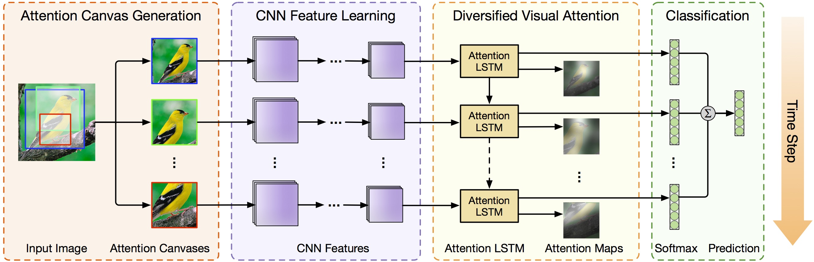
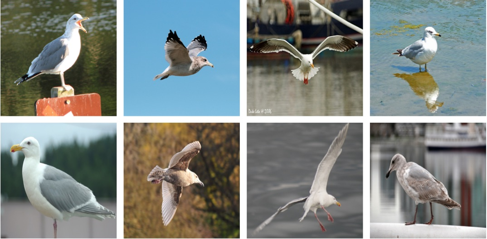
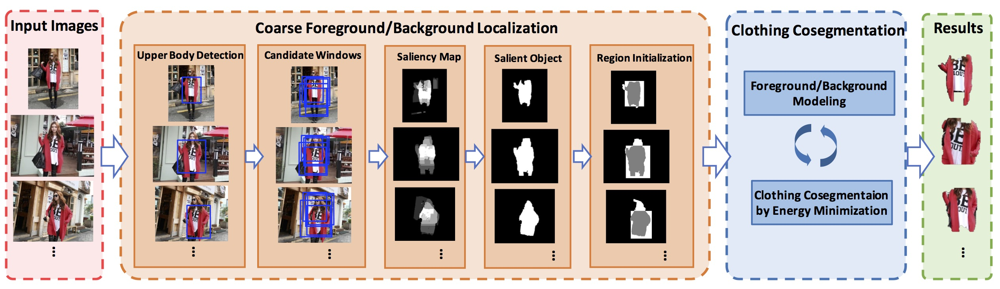
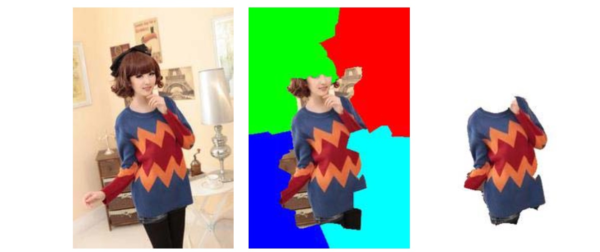
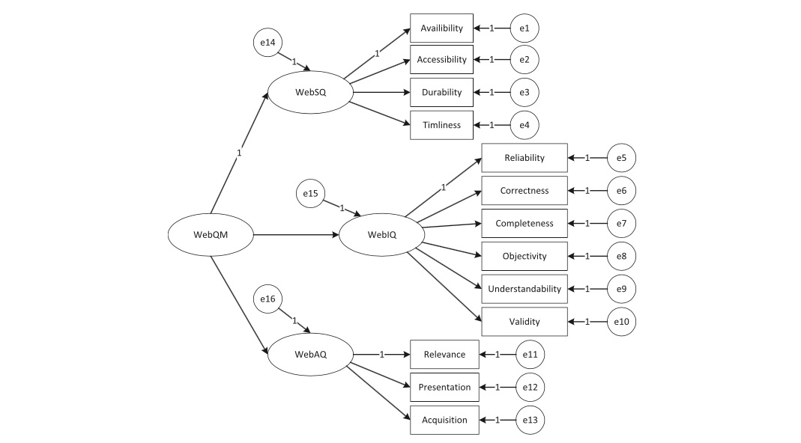
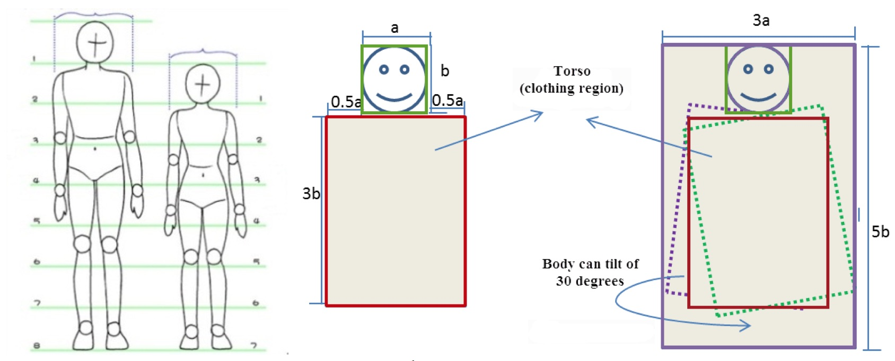

Deep Learning, Computer Vision, Image Processing, Data Mining
Multimedia, Information Retrieval
Recent Publications

Diversified Visual Attention Networks for Fine-Grained Object Classification Bo Zhao, Xiao Wu, Jiashi Feng, Qiang Peng, Shuicheng Yan
IEEE Transactions on Multimedia, 2016 (SCI, IF: 2.536)
[ Link ] [ BibTex ]

A Survey on Deep Learning-Based Fine-Grained Object Classification and Semantic Segmentation Bo Zhao, Jiashi Feng, Xiao Wu, Qiang Peng, Shuicheng Yan
International Journal of Automation and Computing, 2016 (EI)
[ Paper ] [ BibTex ]

Clothing Cosegmentation for Shopping Images Bo Zhao, Xiao Wu, Qiang Peng, Shuicheng Yan
IEEE Transactions on Multimedia, 2016 (SCI, IF: 2.536)
[ Paper ] [ BibTex ]

Clothing Extraction Using Region-Based Segmentation and Pixel-Level Refinement
Zhaorui Liu, Xiao Wu, Bo Zhao, Qiang Peng
IEEE International Symposium on Multimedia (ISM), 2014 (EI)
[ Paper ] [ BibTex ]

Formalizing and Validating the Web Quality Model for Web Source Quality Evaluation Bo Zhao, Yan Zhu
Expert Systems with Applications, 2014 (SCI, IF: 2.981)
[ Paper ] [ BibTex ]

Clothing Extraction by Coarse Region Localization and Fine Foreground/Background Estimation
Xiao Wu, Bo Zhao, Ling-Ling Liang, Qiang Peng
International Conference on Multimedia Modeling (MMM), 2013 (EI)
[ Paper ] [ BibTex ]